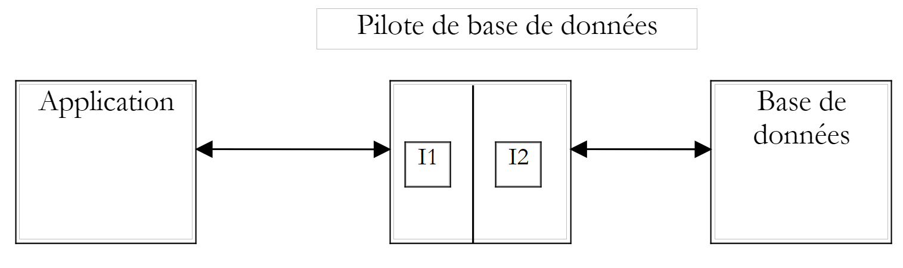
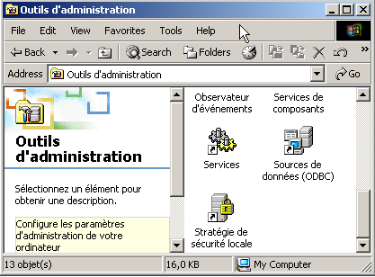
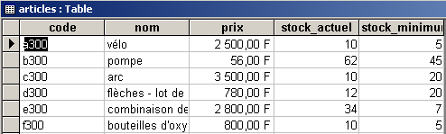
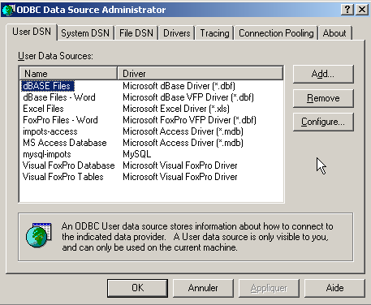
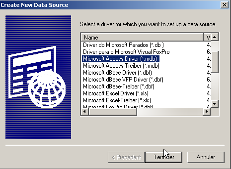
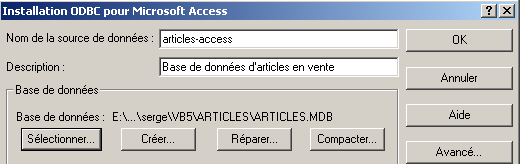
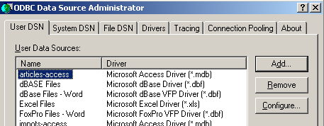

7. Datenbankzugriff
7.1. Allgemeines
Für Windows-Plattformen stehen zahlreiche Datenbanken zur Verfügung. Um darauf zuzugreifen, verwenden Anwendungen Programme, die als Treiber bezeichnet werden.
 |
In der obigen Abbildung verfügt der Treiber über zwei Schnittstellen:
- die Schnittstelle I1, die der Anwendung zur Verfügung steht
- die Schnittstelle I2 zur Datenbank
Um zu verhindern, dass eine für die Datenbank B1 geschriebene Anwendung bei einer Migration auf eine andere Datenbank B2 neu geschrieben werden muss, wurden Standardisierungsbemühungen für die Schnittstelle I1 unternommen. Wenn Datenbanken mit „standardisierten“ Treibern verwendet werden, wird die Datenbank B1 mit dem Treiber P1 und die Datenbank B2 mit dem Treiber P2 ausgestattet, wobei die I1-Schnittstelle dieser beiden Treiber identisch ist. Somit muss die Anwendung nicht neu geschrieben werden. So können Sie beispielsweise eine ACCESS-Datenbank in eine MySQL-Datenbank migrieren, ohne die Anwendung zu ändern.
Es gibt zwei Arten von standardisierten Treibern:
- ODBC-Treiber (Open DataBase Connectivity)
- OLE DB-Treiber (Object Linking and Embedding DataBase)
ODBC-Treiber ermöglichen den Zugriff auf Datenbanken. Die Datenquellen für OLE DB-Treiber sind vielfältiger: Datenbanken, E-Mail-Systeme, Verzeichnisse usw. Es gibt keine Einschränkungen. Jede Datenquelle kann Gegenstand eines OLE DB-Treibers sein, wenn ein Anbieter dies beschließt. Der Vorteil liegt auf der Hand: Sie haben einheitlichen Zugriff auf eine Vielzahl von Daten.
Die .NET-Plattform verfügt über zwei Arten von Datenzugriffsklassen:
- SQL Server.NET-Klassen
- OLE DB.NET-Klassen
Die ersten Klassen ermöglichen den direkten Zugriff auf das SQL Server-DBMS von Microsoft ohne einen zwischengeschalteten Treiber. Die zweiten Klassen ermöglichen den Zugriff auf OLE DB-Datenquellen.

Die .NET-Plattform wird (Stand: Mai 2002) mit drei OLE-DB-Treibern für SQL Server, Oracle und Microsoft Jet (Access) bereitgestellt. Wenn Sie mit einer Datenbank arbeiten möchten, die über einen ODBC-Treiber, aber keinen OLE-DB-Treiber verfügt, ist dies nicht möglich. Daher können Sie nicht mit dem DBMS MySQL arbeiten, das (Stand Mai 2002) keinen OLE-DB-Treiber bereitstellt. Es gibt jedoch eine Reihe von Klassen, die den Zugriff auf ODBC-Datenquellen ermöglichen: die odbc.net-Klassen. Diese sind standardmäßig nicht im SDK enthalten und müssen von der Microsoft-Website heruntergeladen werden. In den folgenden Beispielen werden wir hauptsächlich diese ODBC-Klassen verwenden, da die meisten Datenbanken unter Windows über einen solchen Treiber verfügen. Hier ist beispielsweise eine Liste der auf einem Windows 2000-Rechner installierten ODBC-Treiber (Startmenü/Einstellungen/Systemsteuerung/Verwaltung):

Wählen Sie das Symbol „ODBC-Datenquelle“ aus:

7.2. Die beiden Möglichkeiten zur Verwendung einer Datenquelle
Die .NET-Plattform ermöglicht es Ihnen, eine Datenquelle auf zwei verschiedene Arten zu nutzen:
- Verbundener Modus
- Offline-Modus
Im verbundenen Modus
- eine Verbindung zur Datenquelle
- arbeitet mit der Datenquelle im Lese-/Schreibmodus
- schließt die Verbindung
Im Offline-Modus
- eine Verbindung zur Datenquelle
- ruft eine Speicherkopie aller oder eines Teils der Daten aus der Quelle ab
- schließt die Verbindung
- arbeitet mit der Kopie der Daten im Arbeitsspeicher im Lese-/Schreibmodus
- öffnet nach Abschluss der Arbeit eine Verbindung, sendet die geänderten Daten an die Datenquelle, damit diese aktualisiert werden können, und schließt die Verbindung
In beiden Fällen ist es der Prozess der Datenverarbeitung und -aktualisierung, der Zeit in Anspruch nimmt. Stellen Sie sich vor, diese Aktualisierungen würden durch einen Benutzer vorgenommen, der Daten eingibt; dieser Vorgang kann mehrere zehn Minuten dauern. Während dieser gesamten Zeit bleibt im verbundenen Modus die Verbindung zur Datenbank bestehen und Änderungen werden sofort übernommen. Im Offline-Modus besteht während der Aktualisierung der Daten keine Verbindung zur Datenbank. Änderungen werden nur an der Kopie im Arbeitsspeicher vorgenommen. Sie werden erst dann auf einmal in der Datenquelle übernommen, wenn alles abgeschlossen ist.
Was sind die Vor- und Nachteile der beiden Methoden?
- Eine Verbindung beansprucht Systemressourcen. Bei vielen gleichzeitigen Verbindungen hilft der Offline-Modus, deren Dauer zu minimieren. Dies ist bei Webanwendungen mit Tausenden von Benutzern der Fall.
- Der Nachteil des Offline-Modus ist der heikle Umgang mit gleichzeitigen Aktualisierungen. Benutzer U1 ruft zum Zeitpunkt T1 Daten ab und beginnt, diese zu ändern. Zum Zeitpunkt T2 greift auch Benutzer U2 auf die Datenquelle zu und ruft dieselben Daten ab. In der Zwischenzeit hat Benutzer U1 einige Daten geändert, diese aber noch nicht an die Datenquelle übertragen. U2 arbeitet daher mit Daten, von denen einige fehlerhaft sind. .NET-Klassen bieten Lösungen zur Bewältigung dieses Problems, doch es ist nicht einfach zu lösen.
- Im verbundenen Modus stellen gleichzeitige Datenaktualisierungen durch mehrere Benutzer normalerweise kein Problem dar. Da die Verbindung zur Datenbank aufrechterhalten wird, verwaltet die Datenbank diese gleichzeitigen Aktualisierungen selbst. So sperrt Oracle eine Zeile in der Datenbank, sobald ein Benutzer sie ändert. Sie bleibt gesperrt – und ist somit für andere Benutzer unzugänglich –, bis der Benutzer, der sie geändert hat, die Änderung festschreibt oder rückgängig macht.
- Wenn Daten über das Netzwerk gemeinsam genutzt werden müssen, sollten Sie den Offline-Modus wählen. Dieser Modus stellt eine Momentaufnahme der Daten in einem Objekt bereit, das als Datensatz bezeichnet wird und als eigenständige Datenbank fungiert. Dieses Objekt kann über das Netzwerk zwischen Rechnern gemeinsam genutzt werden.
Wir werden zunächst den verbundenen Modus untersuchen.
7.3. Zugriff auf Daten im verbundenen Modus
7.3.1. Die Datenbanken im Beispiel
Wir betrachten eine Access-Datenbank namens articles.mdb, die nur eine Tabelle namens ARTICLES mit der folgenden Struktur enthält:
name | Typ |
Code | 4-stelliger Artikelcode |
Name | sein Name (Zeichenkette) |
Preis | sein Preis (aktuell) |
aktueller_Bestand | aktueller Lagerbestand (Ganzzahl) |
min_stock | der Mindestbestand (Ganzzahl), unterhalb dessen der Artikel nachbestellt werden muss |
Der ursprüngliche Inhalt ist wie folgt:

Wir werden diese Datenbank sowohl über einen ODBC-Treiber als auch über einen OLE DB-Treiber nutzen, um die Ähnlichkeit zwischen den beiden Ansätzen zu veranschaulichen und weil uns für ACCESS beide Treiberarten zur Verfügung stehen.
Wir werden außerdem eine MySQL-Datenbank namens DBARTICLES verwenden, die dieselbe einzelne Tabelle ARTICLES und denselben Inhalt enthält und über einen ODBC-Treiber zugänglich ist, um zu zeigen, dass die für die Access-Datenbank geschriebene Anwendung nicht geändert werden muss, um die MySQL-Datenbank zu nutzen. Auf die Datenbank DBARTICLES kann ein Benutzer namens admarticles mit dem Passwort mdparticles zugreifen. Der folgende Screenshot zeigt den Inhalt der MySQL-Datenbank:
C:\mysql\bin>mysql --database=dbarticles --user=admarticles --password=mdparticles
Welcome to the MySQL monitor. Commands end with ; or \g.
Your MySQL connection id is 3 to server version: 3.23.49-max-debug
Type 'help' for help.
mysql> show tables;
+----------------------+
| Tables_in_dbarticles |
+----------------------+
| articles |
+----------------------+
1 row in set (0.01 sec)
mysql> select * from articles;
+------+--------------------------------+------+--------------+---------------+
| code | nom | prix | stock_actuel | stock_minimum |
+------+--------------------------------+------+--------------+---------------+
| a300 | vÚlo | 2500 | 10 | 5 |
| b300 | pompe | 56 | 62 | 45 |
| c300 | arc | 3500 | 10 | 20 |
| d300 | flÞches - lot de 6 | 780 | 12 | 20 |
| e300 | combinaison de plongÚe | 2800 | 34 | 7 |
| f300 | bouteilles d'oxygÞne | 800 | 10 | 5 |
+------+--------------------------------+------+--------------+---------------+
6 rows in set (0.02 sec)
mysql> describe articles;
+---------------+-------------+------+-----+---------+-------+
| Field | Type | Null | Key | Default | Extra |
+---------------+-------------+------+-----+---------+-------+
| code | text | YES | | NULL | |
| nom | text | YES | | NULL | |
| prix | double | YES | | NULL | |
| stock_actuel | smallint(6) | YES | | NULL | |
| stock_minimum | smallint(6) | YES | | NULL | |
+---------------+-------------+------+-----+---------+-------+
5 rows in set (0.00 sec)
mysql> exit
Bye
Um die ACCESS-Datenbank als ODBC-Datenquelle zu definieren, gehen Sie wie folgt vor:
- Öffnen Sie den ODBC-Datenquellen-Manager wie oben gezeigt und wählen Sie die Registerkarte „Benutzer-DSN“ (DSN = Data Source Name)

- Fügen Sie über die Schaltfläche „Hinzufügen“ eine Quelle hinzu, geben Sie an, dass auf diese Quelle über einen Access-Treiber zugegriffen werden kann, und klicken Sie auf „Fertig stellen“:

- Benennen Sie die Datenquelle „articles-access“, geben Sie eine Beschreibung Ihrer Wahl ein und wählen Sie über die Schaltfläche „Auswählen“ die .mdb-Datei der Datenbank aus. Klicken Sie abschließend auf „OK“.

Die neue Datenquelle wird dann in der Liste der Benutzer-DSNs angezeigt:

Um die MySQL-Datenbank „DBARTICLES“ als ODBC-Datenquelle zu definieren, gehen Sie wie folgt vor:
- Öffnen Sie den ODBC-Datenquellen-Manager wie oben gezeigt und wählen Sie die Registerkarte „Benutzer-DSNs“. Fügen Sie über „Hinzufügen“ eine neue Datenquelle hinzu und wählen Sie den MySQL-ODBC-Treiber aus.

- Klicken Sie auf „Fertig stellen“. Daraufhin wird eine Konfigurationsseite für die MySQL-Quelle angezeigt:
54321

- Geben Sie unter (1) einen Namen für Ihre ODBC-Datenquelle ein
- Geben Sie in (2) den Rechner an, auf dem sich der MySQL-Server befindet. Hier geben wir `localhost` ein, um anzugeben, dass er sich auf demselben Rechner wie unsere Anwendung befindet. Befände sich der MySQL-Server auf einem Remote-Rechner `M`, würden wir hier dessen Namen eingeben, und unsere Anwendung würde dann ohne Änderungen mit einer Remote-Datenbank arbeiten.
- Geben Sie in (3) den Namen der Datenbank ein. Hier heißt sie DBARTICLES.
- Geben Sie in (4) den Benutzernamen admarticles und in (5) das Passwort mdparticles ein.
7.3.2. Verwendung eines ODBC-Treibers
In einer Anwendung, die eine Datenbank im verbundenen Modus nutzt, sind im Allgemeinen die folgenden Schritte erforderlich:
- Verbindung zur Datenbank herstellen
- Senden von SQL-Abfragen an die Datenbank
- Empfangen und Verarbeiten der Ergebnisse dieser Abfragen
- Schließen der Verbindung
Die Schritte 2 und 3 werden wiederholt ausgeführt, wobei die Verbindung erst am Ende der Datenbankoperationen geschlossen wird. Dies ist ein relativ gängiges Muster, das Ihnen vielleicht bekannt ist, wenn Sie bereits interaktiv mit einer Datenbank gearbeitet haben. Diese Schritte sind identisch, unabhängig davon, ob der Zugriff auf die Datenbank über einen ODBC-Treiber oder einen OLE-DB-Treiber erfolgt. Nachfolgend finden Sie ein Beispiel für die Verwendung der .NET-Klassen zur Verwaltung von ODBC-Datenquellen. Das Programm heißt liste und nimmt als Parameter den DSN-Namen einer ODBC-Datenquelle entgegen, die eine Tabelle namens ARTICLES enthält. Anschließend zeigt es den Inhalt dieser Tabelle an:
dos>liste
syntaxe : pg dsnArticles
dos>liste articles-access
----------------------------------------
code,nom,prix,stock_actuel,stock_minimum
----------------------------------------
a300 vélo 2500 10 5
b300 pompe 56 62 45
c300 arc 3500 10 20
d300 flèches - lot de 6 780 12 20
e300 combinaison de plongée 2800 34 7
f300 bouteilles d'oxygène 800 10 5
dos>liste mysql-artices
Erreur d'exploitation de la base de données (ERROR [IM002] [Microsoft][ODBC Driver Manager] Data source name not found and no default driver specified)
dos>liste mysql-articles
----------------------------------------
code,nom,prix,stock_actuel,stock_minimum
----------------------------------------
a300 vélo 2500 10 5
b300 pompe 56 62 45
c300 arc 3500 10 20
d300 flèches - lot de 6 780 12 20
e300 combinaison de plongée 2800 34 7
f300 bouteilles d'oxygène 800 10 5
Aus den obigen Ergebnissen geht hervor, dass das Programm den Inhalt sowohl der ACCESS-Datenbank als auch der MySQL-Datenbank aufgelistet hat. Sehen wir uns nun den Code für dieses Programm an:
' options
Option Explicit On
Option Strict On
' namespaces
Imports System
Imports System.Data
Imports Microsoft.Data.Odbc
Imports Microsoft.VisualBasic
Module db1
Sub main(ByVal args As String())
' application console
' displays the contents of a ARTICLES table in a DSN database
' whose name is passed in parameter
Const syntaxe As String = "syntaxe : pg dsnArticles"
Const tabArticles As String = "articles" ' table of articles
' parameter verification
' do we have 1 parameter
If args.Length <> 1 Then
' error msg
Console.Error.WriteLine(syntaxe)
' end
Environment.Exit(1)
End If
' parameter is retrieved
Dim dsnArticles As String = args(0) ' the DSN database
' preparing the connection to the comic
Dim articlesConn As OdbcConnection = Nothing ' the connection
Dim myReader As OdbcDataReader = Nothing ' the data reader
' attempt to access the database
Try
' base connection chain
Dim connectString As String = "DSN=" + dsnArticles + ";"
articlesConn = New OdbcConnection(connectString)
articlesConn.Open()
' execution of a SQL command
Dim sqlText As String = "select * from " + tabArticles
Dim myOdbcCommand As New OdbcCommand(sqlText)
myOdbcCommand.Connection = articlesConn
myReader = myOdbcCommand.ExecuteReader()
' Using the recovered table
' column display
Dim ligne As String = ""
Dim i As Integer
For i = 0 To (myReader.FieldCount - 1) - 1
ligne += myReader.GetName(i) + ","
Next i
ligne += myReader.GetName(i)
Console.Out.WriteLine((ControlChars.Lf + "".PadLeft(ligne.Length, "-"c) + ControlChars.Lf + ligne + ControlChars.Lf + "".PadLeft(ligne.Length, "-"c) + ControlChars.Lf))
' data display
While myReader.Read()
' current line operation
ligne = ""
For i = 0 To myReader.FieldCount - 1
ligne += myReader(i).ToString + " "
Next i
Console.WriteLine(ligne)
End While
Catch ex As Exception
Console.Error.WriteLine(("Erreur d'exploitation de la base de données " + ex.Message + ")"))
Environment.Exit(2)
Finally
' drive lock
myReader.Close()
' locking connection
articlesConn.Close()
End Try
End Sub
End Module
Die ODBC-Quellverwaltungs-Klassen befinden sich im Namespace „Microsoft.Data.Odbc“, der daher importiert werden muss. Darüber hinaus befinden sich einige Klassen im Namespace „System.Data“.
Imports System.Data
Imports Microsoft.Data.Odbc
Die vom Programm verwendeten Namespaces befinden sich in verschiedenen Assemblies. Kompilieren Sie das Programm mit dem folgenden Befehl:
dos>vbc /r:microsoft.data.odbc.dll /r:microsoft.visualbasic.dll /r:system.dll /r:system.data.dll db1.vb
7.3.2.1. Die Verbindungsphase
Eine ODBC-Verbindung nutzt die Klasse OdbcConnection. Der Konstruktor dieser Klasse nimmt als Parameter eine sogenannte Verbindungszeichenfolge entgegen. Dabei handelt es sich um eine Zeichenfolge, die alle Parameter definiert, die für den Aufbau der Verbindung zur Datenbank erforderlich sind. Da es viele solcher Parameter geben kann, ist die Zeichenfolge oft komplex. Die Zeichenfolge hat die Form „param1=value1;param2=value2;...;paramj=valuej;“. Hier sind einige mögliche „paramj“-Parameter:
Benutzername des Benutzers, der auf die Datenbank zugreifen wird | |
das Passwort dieses Benutzers | |
der DSN-Name der Datenbank, falls vorhanden | |
Name der Datenbank, auf die zugegriffen wird | |
Wenn Sie eine Datenquelle mithilfe des ODBC-Datenquellen-Administrators als ODBC-Datenquelle definieren, wurden diese Parameter bereits festgelegt und gespeichert. In diesem Fall müssen Sie lediglich den DSN-Parameter übergeben, der den DSN-Namen der Datenquelle angibt. Genau das geschieht hier:
' preparing the connection to the comic
Dim articlesConn As OdbcConnection = Nothing ' the connection
Dim myReader As OdbcDataReader = Nothing ' the data reader
Try
' attempt to access the database
' base connection chain
Dim connectString As String = "DSN=" + dsnArticles + ";"
articlesConn = New OdbcConnection(connectString)
articlesConn.Open()
Sobald das OdbcConnection-Objekt erstellt ist, öffnen wir die Verbindung mit der Open-Methode. Dieser Vorgang kann fehlschlagen, genau wie jeder andere Datenbankvorgang. Deshalb ist der gesamte Code für den Datenbankzugriff in einem try-catch-Block eingeschlossen. Sobald die Verbindung hergestellt ist, können wir SQL-Abfragen an die Datenbank senden.
7.3.2.2. Ausführen von SQL-Abfragen
Um SQL-Abfragen auszuführen, benötigen wir ein Command-Objekt – genauer gesagt ein OdbcCommand-Objekt, da wir eine ODBC-Datenquelle verwenden. Die OdbcCommand-Klasse verfügt über mehrere Konstruktoren:
- OdbcCommand(): Erstellt ein leeres Command-Objekt. Um es zu verwenden, müssen Sie später verschiedene Eigenschaften angeben:
- CommandText: der Text der auszuführenden SQL-Abfrage
- Connection: das OdbcConnection-Objekt, das die Verbindung zur Datenbank darstellt, auf der die Abfrage ausgeführt wird
- CommandType: der Typ der SQL-Abfrage. Es gibt drei mögliche Werte
- CommandType.Text: Die CommandText-Eigenschaft enthält den Text einer SQL-Abfrage (Standardwert)
- CommandType.StoredProcedure: Die CommandText-Eigenschaft enthält den Namen einer gespeicherten Prozedur in der Datenbank
- CommandType.TableDirect: Die CommandText-Eigenschaft enthält den Namen einer Tabelle T. Entspricht `SELECT * FROM T`. Existiert nur für OLE-DB-Treiber.
- OdbcCommand(string sqlText): Der Parameter sqlText wird der Eigenschaft CommandText zugewiesen. Dies ist der Text der auszuführenden SQL-Abfrage. Die Verbindung muss in der Eigenschaft Connection angegeben werden.
- OdbcCommand(string sqlText, OdbcConnection connection): Der Parameter sqlText wird der Eigenschaft CommandText zugewiesen, der Parameter connection der Eigenschaft Connection.
Zur Ausführung der SQL-Abfrage stehen zwei Methoden zur Verfügung:
- OdbcDataReader ExecuteReader(): Sendet die SELECT-Abfrage aus CommandText an die Verbindung und erstellt ein OdbcDataReader-Objekt, das Zugriff auf alle Zeilen in der Ergebnistabelle der SELECT-Abfrage bietet
- int ExecuteNonQuery(): Sendet die Update-Abfrage (INSERT, UPDATE, DELETE) aus CommandText an die Connection und gibt die Anzahl der von der Aktualisierung betroffenen Zeilen zurück.
In unserem Beispiel führen wir nach dem Öffnen der Datenbankverbindung eine SQL-SELECT-Abfrage aus, um den Inhalt der Tabelle ARTICLES abzurufen:
' exécution d'une commande SQL
Dim sqlText As String = "select * from " + tabArticles
Dim myOdbcCommand As New OdbcCommand(sqlText)
myOdbcCommand.Connection = articlesConn
myReader = myOdbcCommand.ExecuteReader()
Eine Abfrage hat in der Regel den folgenden Typ:
Nur die Schlüsselwörter in der ersten Zeile sind erforderlich; die anderen sind optional. Es gibt weitere Schlüsselwörter, die hier nicht aufgeführt sind.
- Eine Verknüpfung wird für alle Tabellen durchgeführt, die nach dem Schlüsselwort `FROM` aufgeführt sind
- Es werden nur die Spalten beibehalten, die auf das Schlüsselwort `select` folgen
- Es werden nur die Zeilen beibehalten, die die Bedingung des `where`-Schlüsselworts erfüllen
- Die resultierenden Zeilen, sortiert nach dem Ausdruck im Schlüsselwort `ORDER BY`, bilden das Ergebnis der Abfrage.
Das Ergebnis eines SELECT ist eine Tabelle. Wenn wir die vorherige ARTICLES-Tabelle betrachten und die Namen der Artikel abrufen möchten, deren aktueller Lagerbestand unter dem Mindestschwellenwert liegt, würden wir schreiben:
Wenn wir sie alphabetisch nach Namen sortiert haben möchten, würden wir schreiben:
7.3.2.3. Arbeiten mit dem Ergebnis einer SELECT-Abfrage
Das Ergebnis einer SELECT-Abfrage im Offline-Modus ist ein DataReader-Objekt, in diesem Fall ein OdbcDataReader-Objekt. Mit diesem Objekt können Sie alle Zeilen des Ergebnisses nacheinander abrufen und Informationen zu den Spalten in diesen Ergebnissen erhalten. Sehen wir uns einige Eigenschaften und Methoden dieser Klasse an:
die Anzahl der Spalten in der Tabelle | |
Item(i) steht für die Spalte Nummer i der aktuellen Zeile im Ergebnis | |
Der Wert der Spalte i der aktuellen Zeile, zurückgegeben als Typ XXX (Int16, Int32, Int64, Double, String, Boolean, ...) | |
Name der Spalte Nummer i | |
schließt das OdbcdataReader-Objekt und gibt die zugehörigen Ressourcen frei | |
springt in der Ergebnistabelle um eine Zeile vor. Gibt false zurück, wenn dies nicht möglich ist. Die neue Zeile wird zur aktuellen Zeile des Readers. |
Die Verarbeitung des Ergebnisses einer SELECT-Anweisung ist in der Regel ein sequenzieller Vorgang, ähnlich wie bei Textdateien: Man kann sich in der Tabelle nur vorwärts bewegen, nicht rückwärts:
While myReader.Read()
' on a une ligne - on l'exploite
....
' ligne suivante
end while
Diese Erläuterungen reichen aus, um den folgenden Code in unserem Beispiel zu verstehen:
' Exploitation de la table récupérée
' affichage des colonnes
Dim ligne As String = ""
Dim i As Integer
For i = 0 To (myReader.FieldCount - 1) - 1
ligne += myReader.GetName(i) + ","
Next i
ligne += myReader.GetName(i)
Console.Out.WriteLine((ControlChars.Lf + "".PadLeft(ligne.Length, "-"c) + ControlChars.Lf + ligne + ControlChars.Lf + "".PadLeft(ligne.Length, "-"c) + ControlChars.Lf))
' affichage des données
While myReader.Read()
' exploitation ligne courante
ligne = ""
For i = 0 To myReader.FieldCount - 1
ligne += myReader(i).ToString + " "
Next i
Console.WriteLine(ligne)
End While
Die einzige Schwierigkeit liegt in der Anweisung, in der die Werte der verschiedenen Spalten der aktuellen Zeile verkettet werden:
For i = 0 To myReader.FieldCount - 1
ligne += myReader(i).ToString + " "
Next i
Die Notation line+=myReader(i).ToString wird in line+=myReader.Item(i).ToString() übersetzt, wobei Item(i) der Wert der Spalte i in der aktuellen Zeile ist.
7.3.2.4. Freigabe von Ressourcen
Die Klassen OdbcReader und OdbcConnection verfügen beide über eine Close()-Methode, die die mit den geschlossenen Objekten verbundenen Ressourcen freigibt.
7.3.3. Verwendung eines OLE-DB-Treibers
Wir verwenden dasselbe Beispiel, diesmal jedoch mit einer Datenbank, auf die über einen OLE-DB-Treiber zugegriffen wird. Die .NET-Plattform stellt einen solchen Treiber für Access-Datenbanken bereit. Wir verwenden also dieselbe Datenbank „articles.mdb“ wie zuvor. Unser Ziel ist es hier zu zeigen, dass sich zwar die Klassen ändern können, die Konzepte jedoch dieselben bleiben:
- Die Verbindung wird durch ein OleDbConnection-Objekt dargestellt
- eine SQL-Abfrage wird mithilfe eines OleDbCommand-Objekts ausgeführt
- wenn es sich bei dieser Abfrage um eine SELECT-Anweisung handelt, wird ein OleDbDataReader-Objekt zurückgegeben, um auf die Zeilen der Ergebnistabelle zuzugreifen
Diese Klassen befinden sich im Namespace „System.Data.OleDb“. Das vorherige Programm lässt sich leicht anpassen, um mit einer OLE-DB-Datenbank zu arbeiten:
- Ersetzen Sie überall OdbcXX durch OleDbXX
- Ändern Sie die Verbindungszeichenfolge. Für eine ACCESS-Datenbank ohne Anmelde- und Passwortangabe lautet die Verbindungszeichenfolge Provider=Microsoft.JET.OLEDB.4.0;Data Source=[file.mdb]. Der konfigurierbare Teil dieser Zeichenfolge ist der Name der zu verwendenden ACCESS-Datei. Wir werden unser Programm so ändern, dass es den Namen dieser Datei als Parameter akzeptiert.
- Der zu importierende Namespace lautet nun System.Data.OleDb.
Unser Programm sieht nun wie folgt aus:
' options
Option Explicit On
Option Strict On
' namespaces
Imports System
Imports System.Data
Imports Microsoft.Data.Odbc
Imports Microsoft.VisualBasic
Imports System.Data.OleDb
Module db2
Public Sub Main(ByVal args() As String)
' application console
' displays the contents of a ARRTICLES table in a DSN database
' whose name is passed in parameter
Const syntaxe As String = "syntaxe : pg base_access_articles"
Const tabArticles As String = "articles" ' table of articles
' parameter verification
' do we have 1 parameter
If args.Length <> 1 Then
' error msg
Console.Error.WriteLine(syntaxe)
' end
Environment.Exit(1)
End If
' parameter is retrieved
Dim dbArticles As String = args(0) ' the database
' preparing the connection to the comic
Dim articlesConn As OleDbConnection = Nothing ' the connection
Dim myReader As OleDbDataReader = Nothing ' the data reader
' attempt to access the database
Try
' base connection chain
Dim connectString As String = "Provider=Microsoft.JET.OLEDB.4.0;Data Source=" + dbArticles + ";"
articlesConn = New OleDbConnection(connectString)
articlesConn.Open()
' execution of a SQL command
Dim sqlText As String = "select * from " + tabArticles
Dim myOleDbCommand As New OleDbCommand(sqlText)
myOleDbCommand.Connection = articlesConn
myReader = myOleDbCommand.ExecuteReader()
' Using the recovered table
' column display
Dim ligne As String = ""
Dim i As Integer
For i = 0 To (myReader.FieldCount - 1) - 1
ligne += myReader.GetName(i) + ","
Next i
ligne += myReader.GetName(i)
Console.Out.WriteLine((ControlChars.Lf + "".PadLeft(ligne.Length, "-"c) + ControlChars.Lf + ligne + ControlChars.Lf + "".PadLeft(ligne.Length, "-"c) + ControlChars.Lf))
' data display
While myReader.Read()
' current line operation
ligne = ""
For i = 0 To myReader.FieldCount - 1
ligne += myReader(i).ToString + " "
Next i
Console.WriteLine(ligne)
End While
Catch ex As Exception
Console.Error.WriteLine(("Erreur d'exploitation de la base de données (" + ex.Message + ")"))
Environment.Exit(2)
Finally
' drive lock
myReader.Close()
' locking connection
articlesConn.Close()
End Try
' end
Environment.Exit(0)
End Sub
End Module
Die erzielten Ergebnisse:
dos>vbc liste.vb
E:\data\serge\MSNET\vb.net\adonet\6>dir
07/05/2002 15:09 2 325 liste.CS
07/05/2002 15:09 4 608 liste.exe
20/08/2001 11:54 86 016 ARTICLES.MDB
dos>liste articles.mdb
----------------------------------------
code,nom,prix,stock_actuel,stock_minimum
----------------------------------------
a300 vélo 2500 10 5
b300 pompe 56 62 45
c300 arc 3500 10 20
d300 flèches - lot de 6 780 12 20
e300 combinaison de plongée 2800 34 7
f300 bouteilles d'oxygène 800 10 5
7.3.4. Eine Tabelle aktualisieren
In den vorherigen Beispielen wurde lediglich der Inhalt einer Tabelle aufgelistet. Wir werden unser Programm zur Verwaltung der Produktdatenbank so anpassen, dass es die Datenbank ändern kann. Das Programm heißt sql. Wir übergeben den DSN-Namen der zu verwaltenden Produktdatenbank als Parameter. Der Benutzer gibt SQL-Befehle direkt über die Tastatur ein, die das Programm ausführt, wie die folgenden Ergebnisse aus der MySQL-Produktdatenbank zeigen:
dos>vbc /r:microsoft.data.odbc.dll sql.vb
dos>sql mysql-articles
Requête SQL (fin pour arrêter) : select * from articles
----------------------------------------
code,nom,prix,stock_actuel,stock_minimum
----------------------------------------
a300 vélo 2500 10 5
b300 pompe 56 62 45
c300 arc 3500 10 20
d300 flèches - lot de 6 780 12 20
e300 combinaison de plongée 2800 34 7
f300 bouteilles d'oxygène 800 10 5
Requête SQL (fin pour arrêter) : select * from articles where stock_actuel<stock_minimum
----------------------------------------
code,nom,prix,stock_actuel,stock_minimum
----------------------------------------
c300 arc 3500 10 20
d300 flèches - lot de 6 780 12 20
Requête SQL (fin pour arrêter) : insert into articles values ("1","1",1,1,1)
Il y a eu 1 ligne(s) modifiée(s)
Requête SQL (fin pour arrêter) : select * from articles
----------------------------------------
code,nom,prix,stock_actuel,stock_minimum
----------------------------------------
a300 vélo 2500 10 5
b300 pompe 56 62 45
c300 arc 3500 10 20
d300 flèches - lot de 6 780 12 20
e300 combinaison de plongée 2800 34 7
f300 bouteilles d'oxygène 800 10 5
1 1 1 1 1
Requête SQL (fin pour arrêter) : update articles set nom="2" where nom="1"
Il y a eu 1 ligne(s) modifiée(s)
Requête SQL (fin pour arrêter) : select * from articles
----------------------------------------
code,nom,prix,stock_actuel,stock_minimum
----------------------------------------
a300 vélo 2500 10 5
b300 pompe 56 62 45
c300 arc 3500 10 20
d300 flèches - lot de 6 780 12 20
e300 combinaison de plongée 2800 34 7
f300 bouteilles d'oxygène 800 10 5
1 2 1 1 1
Requête SQL (fin pour arrêter) : delete from articles where code="1"
Il y a eu 1 ligne(s) modifiée(s)
Requête SQL (fin pour arrêter) : select * from articles
----------------------------------------
code,nom,prix,stock_actuel,stock_minimum
----------------------------------------
a300 vélo 2500 10 5
b300 pompe 56 62 45
c300 arc 3500 10 20
d300 flèches - lot de 6 780 12 20
e300 combinaison de plongée 2800 34 7
f300 bouteilles d'oxygène 800 10 5
Requête SQL (fin pour arrêter) : select * from articles order by nom asc
----------------------------------------
code,nom,prix,stock_actuel,stock_minimum
----------------------------------------
c300 arc 3500 10 20
f300 bouteilles d'oxygène 800 10 5
e300 combinaison de plongée 2800 34 7
d300 flèches - lot de 6 780 12 20
b300 pompe 56 62 45
a300 vélo 2500 10 5
Requête SQL (fin pour arrêter) : fin
Das Programm sieht wie folgt aus:
' options
Option Explicit On
Option Strict On
' namespaces
Imports System
Imports System.Data
Imports Microsoft.Data.Odbc
Imports System.Data.OleDb
Imports System.Text.RegularExpressions
Imports System.Collections
Imports Microsoft.VisualBasic
Module db3
Public Sub Main(ByVal args() As String)
' application console
' executes SQL requests typed on the keyboard on a
' table ARTICLES from a database DSN whose name is passed as a parameter
Const syntaxe As String = "syntaxe : pg dsnArticles"
' parameter verification
' do we have 2 parameters
If args.Length <> 1 Then
' error msg
Console.Error.WriteLine(syntaxe)
' end
Environment.Exit(1)
End If 'if
' parameter is retrieved
Dim dsnArticles As String = args(0)
' base connection chain
Dim connectString As String = "DSN=" + dsnArticles + ";"
' preparing the connection to the comic
Dim articlesConn As OdbcConnection = Nothing
Dim sqlCommand As OdbcCommand = Nothing
Try
' attempt to access the database
articlesConn = New OdbcConnection(connectString)
articlesConn.Open()
' create a command object
sqlCommand = New OdbcCommand("", articlesConn)
'try
Catch ex As Exception
' error msg
Console.Error.WriteLine(("Erreur d'exploitation de la base de données (" + ex.Message + ")"))
' freeing up resources
Try
articlesConn.Close()
Catch
End Try
Environment.Exit(2)
End Try 'catch
' build a dictionary of accepted sql commands
Dim commandesSQL() As String = {"select", "insert", "update", "delete"}
Dim dicoCommandes As New Hashtable
Dim i As Integer
For i = 0 To commandesSQL.Length - 1
dicoCommandes.Add(commandesSQL(i), True)
Next i
' read-execute SQL commands typed on the keyboard
Dim requête As String = Nothing ' query text SQL
Dim champs() As String ' query fields
Dim modèle As New Regex("\s+")
' input-execution loop for SQL commands typed on keyboard
While True
' no error at start
Dim erreur As Boolean = False
' request for query
Console.Out.Write(ControlChars.Lf + "Requête SQL (fin pour arrêter) : ")
requête = Console.In.ReadLine().Trim().ToLower()
' finished?
If requête = "fin" Then
Exit While
End If
' the query is broken down into fields
champs = modèle.Split(requête)
' valid request?
If champs.Length = 0 Or Not dicoCommandes.ContainsKey(champs(0)) Then
' error msg
Console.Error.WriteLine("Requête invalide. Utilisez select, insert, update, delete")
' following request
erreur = True
End If
If Not erreur Then
' prepare the Command object to execute the request
sqlCommand.CommandText = requête
' query execution
Try
If champs(0) = "select" Then
executeSelect(sqlCommand)
Else
executeUpdate(sqlCommand)
End If
Catch ex As Exception
' error msg
Console.Error.WriteLine(("Erreur d'exploitation de la base de données (" + ex.Message + ")"))
End Try
End If
End While
' freeing up resources
Try
articlesConn.Close()
Catch
End Try
Environment.Exit(0)
End Sub
' execute an update request
Sub executeUpdate(ByVal sqlCommand As OdbcCommand)
' executes sqlCommand, update request
Dim nbLignes As Integer = sqlCommand.ExecuteNonQuery()
' display
Console.Out.WriteLine(("Il y a eu " & nbLignes & " ligne(s) modifiée(s)"))
End Sub
' executing a Select query
Sub executeSelect(ByVal sqlCommand As OdbcCommand)
' executes sqlCommand, select query
Dim myReader As OdbcDataReader = sqlCommand.ExecuteReader()
' Using the recovered table
' column display
Dim ligne As String = ""
Dim i As Integer
For i = 0 To (myReader.FieldCount - 1) - 1
ligne += myReader.GetName(i) + ","
Next i
ligne += myReader.GetName(i)
Console.Out.WriteLine((ControlChars.Lf + "".PadLeft(ligne.Length, "-"c) + ControlChars.Lf + ligne + ControlChars.Lf + "".PadLeft(ligne.Length, "-"c) + ControlChars.Lf))
' data display
While myReader.Read()
' current line operation
ligne = ""
For i = 0 To myReader.FieldCount - 1
ligne += myReader(i).ToString + " "
Next i
' display
Console.WriteLine(ligne)
End While
' freeing up resources
myReader.Close()
End Sub
End Module
Wir werden hier nur auf die Neuerungen im Vergleich zum vorherigen Programm eingehen:
- Wir erstellen ein Verzeichnis der zulässigen SQL-Befehle:
' on construit un dictionnaire des commandes sql acceptées
Dim commandesSQL() As String = {"select", "insert", "update", "delete"}
Dim dicoCommandes As New Hashtable
Dim i As Integer
For i = 0 To commandesSQL.Length - 1
dicoCommandes.Add(commandesSQL(i), True)
Next i
Dadurch können wir nun einfach prüfen, ob das erste Wort (fields[0]) der eingegebenen Abfrage einer der vier zulässigen Befehle ist:
' requête valide ?
If champs.Length = 0 Or Not dicoCommandes.ContainsKey(champs(0)) Then
' msg d'erreur
Console.Error.WriteLine("Requête invalide. Utilisez select, insert, update, delete")
' requête suivante
erreur = True
End If 'if
- Zuvor war die Abfrage mithilfe der Split-Methode der RegEx-Klasse in Felder aufgeteilt worden:
Dim modèle As New Regex("\s+")
....
' the query is broken down into fields
champs = modèle.Split(requête)
Die Wörter in der Abfrage können durch beliebig viele Leerzeichen getrennt sein.
- Die Ausführung einer SELECT-Abfrage erfolgt nicht auf dieselbe Weise wie die Ausführung einer Aktualisierungsabfrage (INSERT, UPDATE, DELETE). Daher müssen wir eine Überprüfung durchführen und für jeden dieser beiden Fälle eine andere Funktion ausführen:
' préparation de l'objet Command pour exécuter la requête
sqlCommand.CommandText = requête
' exécution de la requête
Try
If champs(0) = "select" Then
executeSelect(sqlCommand)
Else
executeUpdate(sqlCommand)
End If 'try
Catch ex As Exception
' msg d'erreur
Console.Error.WriteLine(("Erreur d'exploitation de la base de données (" + ex.Message + ")"))
End Try
Die Ausführung einer SQL-Abfrage kann eine Ausnahme auslösen, die hier behandelt wird.
- Die Funktion `executeSelect` deckt alle Aspekte ab, die in den vorherigen Beispielen behandelt wurden.
- Die Funktion `executeUpdate` verwendet die Methode `ExecuteNonQuery` der Klasse `OdbcCommand`, die die Anzahl der vom Befehl betroffenen Zeilen zurückgibt.
7.3.5. Steuerberechnung
Wir verwenden das in einem früheren Kapitel erstellte Steuerobjekt erneut:
' options
Option Strict On
Option Explicit On
' namespaces
Imports System
Public Class impôt
' data required for tax calculation
' come from an external source
Private limites(), coeffR(), coeffN() As Decimal
' manufacturer
Public Sub New(ByVal LIMITES() As Decimal, ByVal COEFFR() As Decimal, ByVal COEFFN() As Decimal)
' we check that the 3 tablaeux are the same size
Dim OK As Boolean = LIMITES.Length = COEFFR.Length And LIMITES.Length = COEFFN.Length
If Not OK Then
Throw New Exception("Les 3 tableaux fournis n'ont pas la même taille(" & LIMITES.Length & "," & COEFFR.Length & "," & COEFFN.Length & ")")
End If
' it's good
Me.limites = LIMITES
Me.coeffR = COEFFR
Me.coeffN = COEFFN
End Sub
' tAX CALCULATION
Public Function calculer(ByVal marié As Boolean, ByVal nbEnfants As Integer, ByVal salaire As Integer) As Long
' calculating the number of shares
Dim nbParts As Decimal
If marié Then
nbParts = CDec(nbEnfants) / 2 + 2
Else
nbParts = CDec(nbEnfants) / 2 + 1
End If
If nbEnfants >= 3 Then
nbParts += 0.5D
End If
' calculation of taxable income & family quota
Dim revenu As Decimal = 0.72D * salaire
Dim QF As Decimal = revenu / nbParts
' tAX CALCULATION
limites((limites.Length - 1)) = QF + 1
Dim i As Integer = 0
While QF > limites(i)
i += 1
End While
' return result
Return CLng(revenu * coeffR(i) - nbParts * coeffN(i))
End Function
End Class
Wir fügen einen neuen Konstruktor hinzu, um die Limit-Arrays, coeffR und coeffN aus einer ODBC-Datenbank zu initialisieren:
Imports System.Data
Imports Microsoft.Data.Odbc
Imports System.Collections
...
' builder 2
Public Sub New(ByVal DSNimpots As String, ByVal Timpots As String, ByVal colLimites As String, ByVal colCoeffR As String, ByVal colCoeffN As String)
' initializes the three limit arrays, coeffR, coeffN from
' the contents of the Timpots table in the ODBC DSNimpots database
' colLimites, colCoeffR, colCoeffN are the three columns of this table
' can throw an exception
Dim connectString As String = "DSN=" + DSNimpots + ";" ' base connection chain
Dim impotsConn As OdbcConnection = Nothing ' the connection
Dim sqlCommand As OdbcCommand = Nothing ' the SQL command
' the SELECT query
Dim selectCommand As String = "select " + colLimites + "," + colCoeffR + "," + colCoeffN + " from " + Timpots
' tables to retrieve data
Dim tLimites As New ArrayList
Dim tCoeffR As New ArrayList
Dim tCoeffN As New ArrayList
' attempt to access the database
impotsConn = New OdbcConnection(connectString)
impotsConn.Open()
' create a command object
sqlCommand = New OdbcCommand(selectCommand, impotsConn)
' execute the query
Dim myReader As OdbcDataReader = sqlCommand.ExecuteReader()
' Using the recovered table
While myReader.Read()
' the data of the current line are put in the tables
tLimites.Add(myReader(colLimites))
tCoeffR.Add(myReader(colCoeffR))
tCoeffN.Add(myReader(colCoeffN))
End While
' freeing up resources
myReader.Close()
impotsConn.Close()
' dynamic tables are placed in static tables
Me.limites = New Decimal(tLimites.Count) {}
Me.coeffR = New Decimal(tLimites.Count) {}
Me.coeffN = New Decimal(tLimites.Count) {}
Dim i As Integer
For i = 0 To tLimites.Count - 1
limites(i) = Decimal.Parse(tLimites(i).ToString())
coeffR(i) = Decimal.Parse(tCoeffR(i).ToString())
coeffN(i) = Decimal.Parse(tCoeffN(i).ToString())
Next i
End Sub
Das Testprogramm sieht wie folgt aus: Es erhält als Argumente die Parameter, die an den Konstruktor der Steuerklasse übergeben werden sollen. Nach der Erstellung eines Steuerobjekts berechnet es die fällige Steuer:
Option Explicit On
Option Strict On
' namespaces
Imports System
Imports Microsoft.VisualBasic
' test pg
Module testimpots
Sub Main(ByVal arguments() As String)
' interactive tax calculator
' the user enters three data points on the keyboard: married nbEnfants salary
' the program then displays the tax payable
Const syntaxe1 As String = "pg DSNimpots tabImpots colLimites colCoeffR colCoeffN"
Const syntaxe2 As String = "syntaxe : marié nbEnfants salaire" + ControlChars.Lf + "marié : o pour marié, n pour non marié" + ControlChars.Lf + "nbEnfants : nombre d'enfants" + ControlChars.Lf + "salaire : salaire annuel en F"
' checking program parameters
If arguments.Length <> 5 Then
' error msg
Console.Error.WriteLine(syntaxe1)
' end
Environment.Exit(1)
End If 'if
' retrieve the arguments
Dim DSNimpots As String = arguments(0)
Dim tabImpots As String = arguments(1)
Dim colLimites As String = arguments(2)
Dim colCoeffR As String = arguments(3)
Dim colCoeffN As String = arguments(4)
' tax object creation
Dim objImpôt As impôt = Nothing
Try
objImpôt = New impôt(DSNimpots, tabImpots, colLimites, colCoeffR, colCoeffN)
Catch ex As Exception
Console.Error.WriteLine(("L'erreur suivante s'est produite : " + ex.Message))
Environment.Exit(2)
End Try
' infinite loop
While True
' initially no errors
Dim erreur As Boolean = False
' tax calculation parameters are requested
Console.Out.Write("Paramètres du calcul de l'impôt au format marié nbEnfants salaire ou rien pour arrêter :")
Dim paramètres As String = Console.In.ReadLine().Trim()
' anything to do?
If paramètres Is Nothing Or paramètres = "" Then
Exit While
End If
' check the number of arguments in the input line
Dim args As String() = paramètres.Split(Nothing)
Dim nbParamètres As Integer = args.Length
If nbParamètres <> 3 Then
Console.Error.WriteLine(syntaxe2)
erreur = True
End If
Dim marié As String
Dim nbEnfants As Integer
Dim salaire As Integer
If Not erreur Then
' checking parameter validity
' married
marié = args(0).ToLower()
If marié <> "o" And marié <> "n" Then
Console.Error.WriteLine((syntaxe2 + ControlChars.Lf + "Argument marié incorrect : tapez o ou n"))
erreur = True
End If
' nbEnfants
nbEnfants = 0
Try
nbEnfants = Integer.Parse(args(1))
If nbEnfants < 0 Then
Throw New Exception
End If
Catch
Console.Error.WriteLine(syntaxe2 + "\nArgument nbEnfants incorrect : tapez un entier positif ou nul")
erreur = True
End Try
' salary
salaire = 0
Try
salaire = Integer.Parse(args(2))
If salaire < 0 Then
Throw New Exception
End If
Catch
Console.Error.WriteLine(syntaxe2 + "\nArgument salaire incorrect : tapez un entier positif ou nul")
erreur = True
End Try
End If
If Not erreur Then
' parameters are correct - tax is calculated
Console.Out.WriteLine(("impôt=" & objImpôt.calculer(marié = "o", nbEnfants, salaire).ToString + " F"))
End If
End While
End Sub
End Module
Die verwendete Datenbank ist eine MySQL-Datenbank mit dem DSN-Namen mysql-imports:
C:\mysql\bin>mysql --database=impots --user=admimpots --password=mdpimpots
Welcome to the MySQL monitor. Commands end with ; or \g.
Your MySQL connection id is 5 to server version: 3.23.49-max-debug
Type 'help' for help.
mysql> show tables;
+------------------+
| Tables_in_impots |
+------------------+
| timpots |
+------------------+
mysql> select * from timpots;
+---------+--------+---------+
| limites | coeffR | coeffN |
+---------+--------+---------+
| 12620 | 0 | 0 |
| 13190 | 0.05 | 631 |
| 15640 | 0.1 | 1290.5 |
| 24740 | 0.15 | 2072.5 |
| 31810 | 0.2 | 3309.5 |
| 39970 | 0.25 | 4900 |
| 48360 | 0.3 | 6898 |
| 55790 | 0.35 | 9316.5 |
| 92970 | 0.4 | 12106 |
| 127860 | 0.45 | 16754 |
| 151250 | 0.5 | 23147.5 |
| 172040 | 0.55 | 30710 |
| 195000 | 0.6 | 39312 |
| 0 | 0.65 | 49062 |
+---------+--------+---------+
Die Ausführung des Testprogramms liefert folgende Ergebnisse:
dos>D:\data\devel\vbnet\poly\chap6\impots>vbc /r:system.data.dll /r:microsoft.data.odbc.dll /r:system.dll /t:library impots.vb
dos>vbc /r:impots.dll testimpots.vb
dos>test mysql-impots timpots limites coeffr coeffn
Paramètres du calcul de l'impôt au format marié nbEnfants salaire ou rien pour arrêter :o 2 200000
impôt=22506 F
Paramètres du calcul de l'impôt au format marié nbEnfants salaire ou rien pour arrêter :n 2 200000
impôt=33388 F
Paramètres du calcul de l'impôt au format marié nbEnfants salaire ou rien pour arrêter :o 3 200000
impôt=16400 F
Paramètres du calcul de l'impôt au format marié nbEnfants salaire ou rien pour arrêter :n 3 300000
impôt=50082 F
Paramètres du calcul de l'impôt au format marié nbEnfants salaire ou rien pour arrêter :n 3 200000
impôt=22506 F
Paramètres du calcul de l'impôt au format marié nbEnfants salaire ou rien pour arrêter :